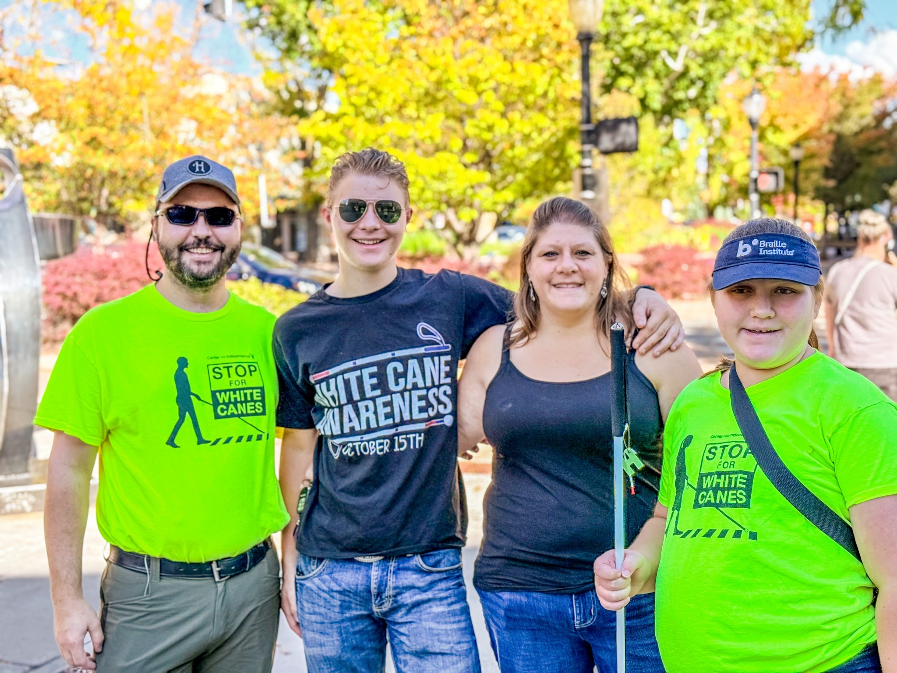

Our story
We learned to turn survival into change.
Before there was #AdvocateDad, there was a father trying to make sure his daughter was seen, counted, taught, and given the chance to build a life of her own.

The beginning
I did not set out to become an advocate.
I became one because my daughter deserved access, opportunity, and a future shaped by her abilities—not by low expectations or inaccessible systems.
Isabelle is blind from optic nerve hypoplasia. She is also autistic and has epilepsy. Those words describe parts of her life, but they do not tell you who she is: intelligent, funny, determined, capable, and unmistakably herself.
When she was young, we trusted that the systems built to educate and support disabled children would recognize what she needed. We learned quickly that love was not enough. Trust was not enough. Even a child’s obvious need was not always enough.
The first hard lesson
If a child is not seen, that child will not be served.
Isabelle’s blindness was not properly identified and counted by her school. That failure was not paperwork. It shaped instruction, services, expectations, and opportunity.
So we learned the language of individualized education programs (IEPs), evaluations, procedural safeguards, assistive technology, Braille, orientation and mobility, and the Expanded Core Curriculum. We learned to document everything. We learned to ask direct questions—and to keep asking when the answers did not match the law or Isabelle’s potential.
When systems underestimate a child, families are forced to become experts just to protect that child’s future.
The education no school offered
The work happened after everyone else went to bed.
It happened in midnight searches, sleepless hours, webinars, conferences, trainings, policy manuals, medical appointments, and meetings where every word mattered.
I did not arrive with degrees or a polished résumé. I brought a systems mind, a father’s urgency, and the experience of growing up in foster care and group homes in Western Colorado. I already knew that a system cannot be judged by its promises. It must be judged by what happens to the person with the least power inside it.
Our fight over Isabelle’s right to a free appropriate public education went to court twice. People close to us did not always understand why we kept pushing. I took plenty of grief for not having what others considered a “real job.” But this was the work: holding the line long enough for Isabelle—and the children coming behind her—to have more than we were first told to expect.

The long game
We were not trying to win a meeting. We were trying to change what happens next.
Over time, the midnight research became fluency. The family fighting to be heard became a resource for other families and even for professionals. Years later, members of Isabelle’s education team began reaching out to ask what we had learned, how we had navigated a problem, and whether we could help someone else.
That is one measure of change: when people who once watched the struggle begin carrying the lessons forward. I became a Colorado Department of Education (CDE) Certified Individualized Education Program (IEP) Facilitator, a parent advisor, a board member, and a voice in state and national conversations. But the titles have never been the point. The point is making the path less brutal for the next family.
Isabelle’s chapter
The little girl people underestimated is becoming the young woman who answers for herself.
Today, Isabelle reads Braille and uses the tools that give her full access: paper Braille, audio, screen readers, refreshable Braille, her Mantis Q40, and the American Printing House for the Blind (APH) Monarch. She travels her neighborhood with her white cane, schedules transportation, keeps appointments, builds independent-living skills, and continues finding her own public voice.
Her independence does not mean doing everything alone. It means having real choices, effective tools, trusted support, and the dignity to say, “I would like to answer that myself.”
I am not here to narrate Isabelle’s experience for her. My job is to help make room—and then listen when she speaks.
The next table
Now, our story is headed to Washington.
This fall, Isabelle and I will carry what we have learned from Western Colorado to Washington, D.C. Public updates will focus on the policy, not private travel, meeting, or participant details.
Our broader experience supports two focused Congressional asks: protect the entire Individuals with Disabilities Education Act (IDEA)—including Part D—in final fiscal year 2027 appropriations, and support and advance Senate bill 5046 (S.5046) so core education functions remain within the U.S. Department of Education.
We are going to talk about Braille literacy, accessible education, assistive technology, transition, rural access, Medicaid, self-determination, and the cost of policies designed without the people who must live with them.
Isabelle is not going as a symbol. She is going as a young adult and self-advocate whose life contains evidence policymakers need to hear.
Our story is still being written
We cannot promise the road will be easy. We can promise no lesson will be wasted.
Every fight has taught us something. Every barrier has shown us where change is needed. Every person who stood beside us proved that advocacy does not have to be lonely.
If our experience can help one family find the path sooner—or help one leader build a system that works—then the hard miles become a road forward.